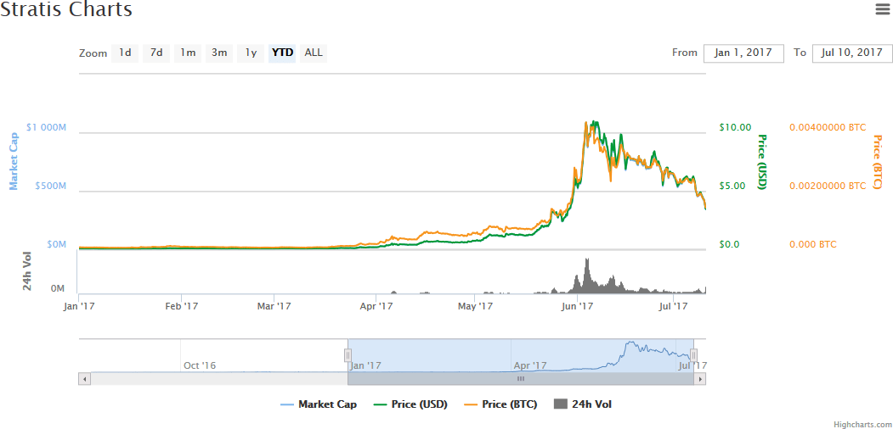
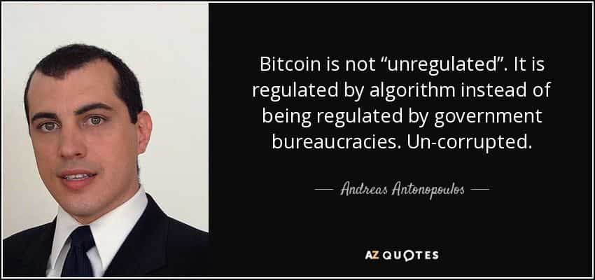

Gentlemen, I do not speak lightly when saying that cryptocurrencies such as Bitcoin, Ethereum, and File Coin, are the biggest financial revolutions since the creation of paper currency. If you’ve been keeping up to date with the financial markets, you’ve likely heard CNN, MSNBC, and the other fake news media outlets claiming Bitcoin is in a bubble, that it’s unsafe, not secure, and other lies.
I’m here to tell you that cryptocurrencies are not only going to revolutionize the entire world, but they’re going to bring power back to the people, make a new class of millionaires, and put an end to the corrupt global cartel of bankers, who’ve long preyed on our country’s economy.
Bitcoin: Destruction of The Globalist Elite
The cryptocurrency market is completely disrupting the IMF, Federal Reserve, and globalist banker elite. First, you need to understand that Bitcoin is a peer to peer digital transaction system.
In other words, there’s no middle man, as there is with an ACH, wire transfer, credit purchase, or cash purchase. In addition to this, cryptocurrency can be stored in a number of ways, such as on a portable flash drive, or on the cloud. While these two characteristics of cryptocurrency may seem insignificant, they’re actually going to completely revolutionize Western Civilization for the better.
With no middle man, the bank can’t take their 5% fee for transferring your money. They also aren’t required to hold your money, meaning that they can’t operate based off of the fractional reserve system, and give out billions, even TRILLIONS in faulty loans, which destroys the economy (like it did in 2008).
Furthermore, Bitcoin is mostly anonymous, meaning that it’s hard to be tied to any name or what it’s used to purchase. If you use a VPN or the Tor browser while purchasing something with Bitcoin, as many dark web drug dealers did, the government can’t even identify the location of your transaction.
This means that Bitcoin, among other digital currencies, are 100% tax free. No government, no bankers, no middle men. For centuries, the bankers have thrived off of debt and printing currency, but with Bitcoin, this is impossible. There is a built in algorithm designed to make the expansion of Bitcoin’s supply slowly decrease, until it becomes equal to the rate of loss (forgetting passwords, losing hard drives, etc).
Can The Government Regulate It?
No. Several governments have tried to regulate it, and they will like continue trying to regulate it, but due to Bitcoin’s peer to peer transaction system, it’s virtually impossible to track or regulate. The government can’t print it, they can’t loan it, and they can’t tax it—which the globalists despite.
They’re terrified of Bitcoin and other cryptocurrencies, which is why they’ve ignored it for so long. When it began making people literal multi-millionaires in 2015 and 2016, however, a number of activists such as Andreas Ontonopoulos and various Silicon Valley executives began to spread awareness.
The fake news media was forced to address it, but they did so reluctantly. They’ve made it seem like cryptocurrencies are a fad, a thing that kids are trading for some quick cash, but that will fade out of popularity. They’ve pushed the idea that Bitcoin is a dangerous investment, it’s too volatile, and it’s in a bubble, and they’re doing everything they can to stop it from gaining popularity… but they’re failing.
The people have, and will, always find a way to ensure their own freedoms. Whether it be by using IP-masking software or even trading cryptocurrencies in person via flash drives, there will be a way.
It’s Not Just Bitcoin (Ethereum, Lite Coin, and more…)
As a testament to the public’s faith in Bitcoin, hundreds of other cryptocurrencies have emerged, creating a rich ecosystem of peer to peer, digital currencies that can be used for a multitude of purposes.
Ethereum, which is often called Bitcoin 2.0, is the next big player—similar to Bitcoin in that it’s digital, peer to peer, and has a controlled growth rate to minimize inflation, there’s one thing that distinguishes it from its peer.
It’s on a block chain. In layman’s terms, this means that it’s part of a global, decentralized infrastructure that easily allows developers to create markets, store registries of debts and credits, create contracts, and more. In other words, it’s the developer’s best friend.
Many games, such as League of Legends, are playing with the idea of accepting Ethereum for in-game skins, boosts, and new characters—even sports organizations have been toying with this idea, where sports fans across the US could use Ethereum to bet for or against various teams, which require a contract (Bitcoin cannot do this).
When the public caught wind of this revolutionary new technology, Ethereum shot up from around $10 to nearly $400 in a matter of 5 months. This whopping 4,000% increase has made teenage nerds and seasoned investors alike the new wave of millionaires.
And it’s just beginning.
Stratis: How to Gain 35,000% in Less Than a Year

Another example of public faith in cryptocurrencies is Stratis, a coin compatible with C#. The coin’s programming compatibility makes it easy for developers to create a rich ecosystem of contracts, markets, and trading systems around it.
So when the public caught wind of it, it jumped from around 3 cents to $10.50 in under a year. This is a roughly 35,000% increase. In other words, if you had purchased just $1,000 worth of Stratis in late 2016, you would now have $350,000.
Now, I know what you’re thinking. “Holy shit Jon, how do I get in on this? Is it too late?” Thankfully, it isn’t too late. In fact, it’s projected that the cryptocurrency market will continue to grow over the next 30+ years, reaching new heights and bringing about a new and improved era in global commerce, free of the (((bankers))) and their greedy little hands swiping away your money.
Jon’s Personal Strategy to Make $1,000,000
There’s several ways that you can cash in on this new and incredible technology. The first, and most stable, is mining. Without going into too much detail, this entails of purchasing an expensive processor, which uses complex algorithms to “crack the code,” and create new cryptocurrencies. This is how the market avoids needing a centralized bank—anyone can use their computers to slowly multiply the volume of cryptocurrencies.
As more and more people create more Bitcoin, the algorithms slowly grow more difficult to crack, which is what puts a peak on the coin’s inflation rate. While you can buy a professional grade Bitcoin miner for $3,000 and expect to profit $500 a month, I do something that’s even better.
There’s a service known as Genesis Mining, which effectively allows you to rent out processing power on an incredibly complex and powerful supercomputer based out of Iceland. Everything from the computer itself to the environment, which is freezing cold, is made to minimize energy expenditure and maximize profit.
Furthermore, you can also “reallocate” your rented out processing power DAILY, meaning you can choose to mine different coins which may be more profitable depending on whether the market goes up or down. Again, I use the service Genesis Mining, and it’s phenomenal—cryptocurrencies are deposited into my account every single day, and it’s fully automated. I just purchased a 2 year contract, and let their computer do all the work. I don’t have to do a single thing, and the money keeps rolling in every day.
For a wallet, I recommend you use Coin Base—it’s a free mobile app which gives you $10 worth of Bitcoin when you join, and you can link it directly to your bank account for easy transfers, to either buy or sell cryptocurrencies, or to cash out and deposit money into your non-crypto bank account.
You can also try day trading, but I don’t recommend you use large amounts until you get the hang of it first. Start off with $50 and scale your way up to the $1,000’s. Many men across the manosphere have been swing trading, as well, meaning they buy/sell over an intra-day period, to take advantage of multiple day, or weekly trends. If you’re going to do this, there’s plenty of tutorials on YouTube for you to watch.
Summary

In summary, Bitcoin, among other cryptocurrencies, are absolutely demolishing the globalist financial structure that they’ve spent centuries trying to build. It’s peer to peer, meaning there’s no middle man. It doesn’t require a bank to hold it, a middle man to transfer it, or a government to print it. Cryptocurrencies are entirely open to anyone with internet access, and seeing that only 50% of the world has this so far, it’s bound to explode as we advance into the technological age.
Don’t get left behind—cryptocurrencies have already made numerous millionaires, such as the pizza man who accepted bitcoin as a payment in 2010, who’s now worth $7 million.
I recommend that you start mining, as it’s the safest option. Use Genesis Mining and slowly rack up those coins over time. Use Coin Base as your wallet, because it’s convenient, there’s a mobile application for it, and they’ll give you $10 just for signing up.
And lastly, I’d like to recommend an upcoming ICO (Initial Coin Offering) called File Coin. The developer, Juan Benet, has an enormous amount of connections in Silicon Valley and the cryptocurrency market. In addition to this, there’s several components of File Coin which make it a revolutionary new technology, but I’ll leave it on you to research it. Just know that I’m investing probably $10,000 into the coin before it even goes public.
Learn how to build sky-high confidence, super-human discipline, and ALPHA MALE assertiveness with Jon’s flagship 7 Strategies to Develop Your Masculinity program.
Read More: How to Make Money Trading Cryptocurrency